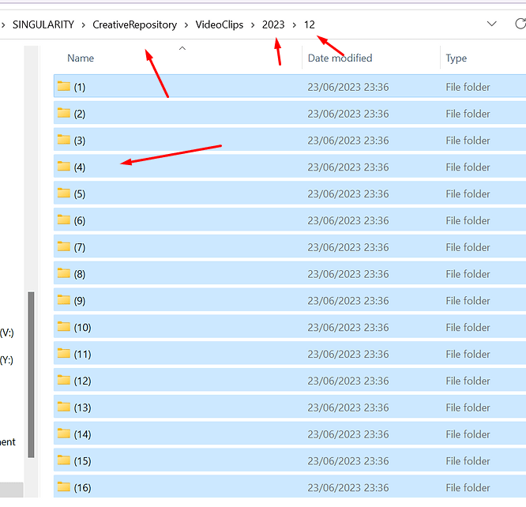

Creating a folder for the creative repository

As a video producer aiming to streamline your workflow and maintain organization, placing daily created videos in the correct folder is crucial for efficiency and ease of access. Here's a strategic approach to achieve this goal:
Establish a Clear Naming Convention
-
Date Format: Start with the date the video was created, using a consistent format (e.g., YYYY-MM-DD). This ensures chronological ordering.
-
Project Name or Code: After the date, include a brief name or code that represents the project or content theme. This helps in quickly identifying the video's subject matter.
-
Version or Sequence Number: If you create multiple videos in a day or have different versions, include a version or sequence number at the end.
Create a Structured Folder Hierarchy
-
Main Folder: Name your main folder something relevant to your overarching project or simply “Productions” if it encompasses various projects.
-
Subfolders by Year and Month: Within the main folder, create subfolders for each year, and within those, further subfolders for each month.
-
Project-Specific Folders: If your work focuses on multiple projects, consider creating project-specific folders within the relevant month.
Implement a Daily Workflow
-
End-of-Day Organization: Allocate a specific time at the end of your production day to manage the files you've created. Making this a habit ensures that no video is misplaced or forgotten.
-
Transfer and Rename: Transfer all daily created videos to your computer, and rename them according to your naming convention before moving them to their specific folder.
-
Review and Verify: Quickly review the files to ensure that each video is in the correct folder and that the content matches the project it’s associated with.
Utilize Software and Automation Tools
-
File Management Software: Use software like Adobe Bridge or File Explorer enhancements that offer batch renaming and easy navigation between folders.
-
Automation Tools: Look into automation tools like Hazel for Mac or Microsoft Power Automate for Windows, which can automatically sort files into the correct folders based on your predefined rules, such as file name, creation date, or metadata.
Regular Maintenance and Backup
-
Weekly Checks: Regularly review your folder structure to ensure everything is in its right place and to make any necessary adjustments.
-
Backup: Implement a robust backup strategy. Use cloud storage services like Google Drive, Dropbox, or external hard drives to back up your video folders. Consider automating this process to ensure you never lose your work.
By following these steps, you can ensure that your video production files are well-organized, easy to find, and secure. This not only saves time but also significantly reduces stress, allowing you to focus more on the creative aspects of your work.
Imported from rifaterdemsahin.com · 2024